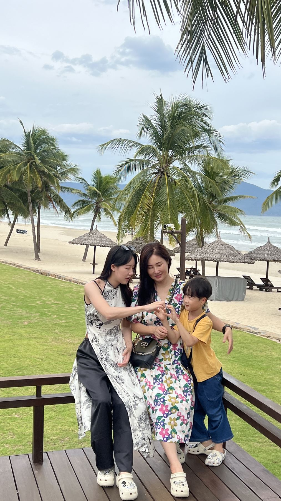

#01 TEAM PRACTICE
발표 연습으로 다진 전달력
팀원들과 의견을 맞추며 발표 전 연습하는 모습입니다.
주변의 일상적인 상황과 순간들을 사진으로 기록하여 그 속에서 발견한 저의 모습을 담았습니다.
함께 준비하고, 맡은 역할을 해내고, 관계를 오래 이어가는 모습에서 서로의 생각을 이해하고 조율하는 소통 방식을 배웠습니다.
팀원들과 의견을 맞추며 발표 전 연습하는 모습입니다.

학생회 활동을 통해 주도적으로 움직이며, 함께하는 사람들을 이끄는 책임감을 배웠습니다.

친구들과 함께 있을 때 분위기를 편안하게 만드는 힘이 있습니다.
아이들의 눈높이에 맞춰 다가가고 반응을 살피는 따뜻함

낯선 환경에서도 아이들이 편안함을 느낄 수 있도록 밝게 다가갔습니다.

작은 변화에도 관심을 기울이는 세심함을 배웠습니다.

몸을 맞대고 아이들과 호흡을 맞추며 관계를 만들어갔습니다.
컨디션 유지를 위해 저만의 방식으로 에너지를 충전합니다.

하루를 마무리하는 나만의 시간을 통해 마음을 정돈하고 활력을 채웁니다.
가족과의 관계 속에서 다정함, 배려, 안정감을 배웠습니다.

가족과 함께할 때 더 큰 힘이 됩니다.

가족 안에서 배운 다정함과 존중은 사람을 대하는 기본 태도가 되었습니다.

가족과 보내는 시간 속에서 자연스럽게 배려를 배웠습니다.

즐거움을 나누며 에너지를 충전하는 편입니다.

가족과 낯선 공간을 함께 경험하며 새로운 환경을 받아들이는 유연함을 키웠습니다.
감사합니다.
지원자 안솔별